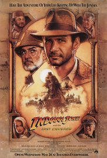

1.
Title:Escape from Shoushenk
Genre: Crime, Drama
Release Date: 14 october 1994
Short Description: Two imprisoned men bond over a number of years, finding solace and eventual redemption through acts of common decency.
2.
Title:The Godfather
Genre: Crime, Drama
Release Date: 24 march 1972
Short Description: The aging patriarch of an organized crime dynasty transfers control of his clandestine empire to his reluctant son.
3.
Title:Indiana Jones and the Last Crusade
Genre: Action, Adventure, Fantasy
Release Date: 24 May 1989
Short Description: When Dr. Henry Jones, Sr. suddenly goes missing while pursuing the Holy Grail, eminent archaeologist Dr. Henry "Indiana" Jones, Jr. must follow in his father's footsteps to stop the Nazis from getting their hands on the Holy Grail first.
4.
Title:Mission: Impossible
Genre: Action, Adventure, Thriller
Release Date: 22 May 1996
Short Description: An American agent, under false suspicion of disloyalty, must discover and expose the real spy without the help of his organization.